أسئلة امتحانات الثانوية العامة (الفرع العلمي) من 2017 إلى 2025 مصنفة على هذا الفصل: 39 سؤال اختيار من متعدد و46 سؤال مقالي ومسألة. اضغط على خيار لترى إن كان صحيحاً مع الشرح، وحاول حل المسائل قبل ما تفتح الإجابة.
حزمة من الشحنات الموجبة دخلت منتقي السرعات كما في الشكل المجاور، ما السبب الذي جعلها تنحرف للأعلى؟
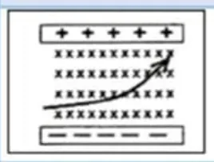
القوة الكهربائية على الشحنات الموجبة للأسفل، والمغناطيسية للأعلى. انحرفت للأعلى ⇐ $qvB\gt qE$ ⇐ $v\gt \dfrac EB$
22022 د1 علمي
يمثل الشكل المجاور سلكاً طويلاً $(ab)$ كتلته $\mathrm{(3\,g)}$ وطوله $\mathrm{(1m)}$ موازٍ للسلك $(xy)$، ويقع السلكان في مستوى رأسي واحد، فإذا كان السلك $(ab)$ قابلاً للانزلاق للأعلى والأسفل، ومر تيار شدته $\mathrm{(100A)}$ في الدارة، ما المسافة التي يتزن عندها السلك بوحدة $(m)$؟
يمثل الشكل المجاور مسار جسيمين مشحونين في مجال مغناطيسي منتظم، ما نوع شحنة كل منهما؟
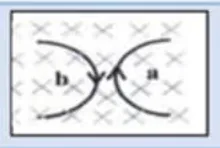
بتطبيق قاعدة اليد اليمنى $\vec F=q\vec v\times\vec B$ على اتجاه انحناء كل مسار.
42021 د1 علمي
يتحرك جسم مشحون في مسار دائري داخل منطقة مجال مغناطيسي منتظم تحت تأثير القوة المغناطيسية، ماذا سيحدث لكل من زخمه الخطي وطاقته الحركية الانتقالية أثناء وجوده داخل منطقة المجال المغناطيسي؟
القوة المغناطيسية عمودية على السرعة فتغير اتجاهها (الزخم متجه يتغير) ولا تبذل شغلاً (مقدار السرعة والطاقة ثابتان).
52021 د1 صناعي
ثلاث جسيمات $(a,b,c)$ تدخل منطقة مجال مغناطيسي منتظم فتنحرف كما في الشكل المجاور ما نوع الشحنة على كلا منهما؟
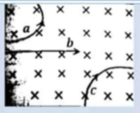
$b$ لا ينحرف فهو متعادل، و $a,c$ ينحرفان باتجاهين متعاكسين، وبقاعدة اليد اليمنى $a$ موجب.
62021 د2 علمي
أدخلت أربع جسيمات متساوية في الشحنة والسرعة عمودياً مجالاً مغناطيسياً منتظماً فاتخذت المسارات المبينة في الشكل، أيها يحمل شحنة سالبة وله أكبر كتلة؟
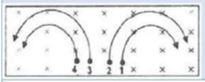
$r=\dfrac{mv}{qB}$ ⇐ الأكبر كتلة له أكبر نصف قطر، ونختار من الجسيمات التي تنحرف باتجاه الشحنة السالبة.
72020 د1
أي الآتية من مميزات المجال المغناطيسي المنتظم؟
القوة المغناطيسية عمودية على السرعة فلا تبذل شغلاً.
82017 د1
أدخلت أربع جسيمات متساوية في مقدار كل من الشحنة والسرعة عمودياً على مجال مغناطيسي منتظم فاتخذت المسارات المبينة في الشكل المجاور، ما الجسيم الذي يحمل شحنة سالبة وله أكبر كتلة؟
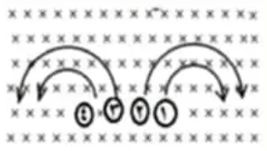
$r\propto m$ بثبوت $q,v,B$، والجسيم (2) سالب وله أكبر نصف قطر بين السالبة.
92017 د1
الشكل المجاور يمثل مجال كهربائي منتظم يؤثر نحو اليمين ومتعامداً مع مجال مغناطيسي منتظم مبتعداً عن الناظر، تتحرك شحنة كهربائية موجبة تحت تأثير المجالين بسرعة ثابتة نحو الأعلى، اعتماداً على الرسم، فإن سرعة الشحنة إذا كان مقدار المجال الكهربائي $(400\,v/m)$ والمجال المغناطيسي $(0.8)$ تسلا تساوي:
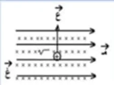
السرعة ثابتة ⇐ $qE=qvB$ ⇐ $v=\dfrac{400}{0.8}=500\,\mathrm{m/s}$
102017 د2
أربع جسيمات مشحونة تتحرك في مجال مغناطيسي كما في الشكل، الجسيم الذي تكون القوة المغناطيسية المؤثرة فيها تساوي صفراً هو:
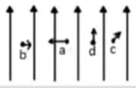
$F=qvB\sin\theta$ وتنعدم عندما تكون السرعة موازية للمجال $(\theta=0)$.
112017 د2
جسيم مشحون دخل منطقة مجال مغناطيسي منتظم بسرعة مقدارها $(4\times10^5\,\mathrm{m/s)}$، حيث تحرك في مسار دائري قطره $\mathrm{(2\,m)}$ ما مقدار التردد الزاوي له بوحدة $\mathrm{(rad/s)}$؟
يمثل الشكل المجاور مسار جسيمين مشحونين بشحنتين متساويتين في المقدار ولهما نفس السرعة، ما نوع شحنة كل منهما؟
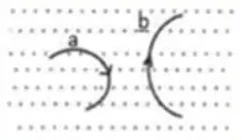
الجسيمان ينحرفان بنفس الاتجاه (حسب الشكل) فشحنتاهما من نفس النوع، وبقاعدة اليد اليمنى مع مجال خارج من الصفحة تكون موجبة.
132018 د1
دخل بروتون مجالاً مغناطيسياً منتظماً شدته $\mathrm{(1.5\,T)}$ بسرعة $(3.1\times10^7\,\mathrm{m/s)}$ باتجاه موازٍ لخطوط المجال المغناطيسي تكون القوة المغناطيسية المؤثرة عليه بوحدة النيوتن:
$F=qvB\sin0=0$
142018 د1
في الشكل المجاور مجال مغناطيسي $(B)$ في مستوى الورقة واتجاهه نحو الشمال، إذا وضع سلك موصل قابل للحركة ويمر به تيار شدته $(I)$ من اليمين إلى اليسار فإن السلك يتحرك:
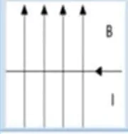
$\vec F=I\vec L\times\vec B=(-\hat x)\times\hat y=-\hat z$ أي داخل الصفحة.
152018 د2
تنشأ قوة تنافر فقط بين سلكين طويلين لا نهائيين عندما يمر بهما تياران:
شدة التيار الكهربائي الذي إذا مر في سلكين مستقيمين متوازيين طويلين المسافة بينهما $\mathrm{(1m)}$ موضوعين في الفراغ، تكون القوة المتبادلة بينهما لكل وحدة طول تساوي $(2\times10^{-7}\,\mathrm{N/m)}$ هو:
هذا هو التعريف الدولي للأمبير.
172018 د2
جسيم مشحون بشحنة موجبة دخل جهاز منتقي السرعات بسرعة $(V)$ فانحرف إلى الأسفل كما في الشكل المقابل هذا يدل على أن:
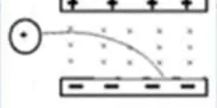
القوة الكهربائية للأسفل (نحو اللوح السالب) تغلبت على المغناطيسية: $qE\gt qvB$
182018 د2
يتحرك بروتون بسرعة $(3\times10^7\,\mathrm{m/s)}$ باتجاه عمودي على مجال مغناطيسي شدته $\mathrm{(0.2\,T)}$ فإن القوة التي يؤثر بها المجال على البروتون (بوحدة النيوتن) تساوي:
دخل جسيم مشحون كتلته $(2\times10^{-10}\,\mathrm{kg)}$ وشحنته $\mathrm{(2\mu C)}$ مجالاً مغناطيسياً منتظماً مقداره $\mathrm{(0.2\,T)}$ بسرعة مقدارها $\mathrm{(10^3\,m/s)}$، باتجاه عمودي على اتجاه المجال المغناطيسي، ما مقدار سرعة الجسيم بعد مرور $(3$ ثوانٍ$)$ على وجوده داخل المجال المغناطيسي بوحدة $\mathrm{(m/s)}$؟
القوة المغناطيسية لا تغير مقدار السرعة، فيبقى $\mathrm{10^3\,m/s}$
202019 د1
يتحرك أيون يحمل شحنة موجبة مقدارها $(3\times10^{-10}\,\mathrm{C)}$ في منطقة مجالين متعامدين: مجال كهربائي شدته $(4\times10^4\,\mathrm{V/m)}$ ومجال مغناطيسي شدته $\mathrm{(0.8\,T)}$. إذا كان تسارع هذا الأيون يساوي صفراً، فما مقدار سرعته بوحدة $\mathrm{(m/s)}$؟
مجال كهربائي منتظم $(E)$ ومجال مغناطيسي $(B)$ في نفس الاتجاه. إذا قذف بروتون في اتجاه خطوط المجالين، فأي الآتية تعتبر صحيحة؟
السرعة موازية لـ $B$ فلا قوة مغناطيسية، والقوة الكهربائية بنفس اتجاه الحركة فتزيد السرعة.
222020 د2
أدخل جسيمان مشحونان مجالاً مغناطيسياً منتظماً حيث كتلة الثاني ثلاثة أمثال كتلة الأول وشحنة الثاني مثلي شحنة الأول، فتحرك الاثنان في مسار دائري، ما النسبة بين تردد حركة الجسيم الثاني إلى تردد حركة الجسيم الأول $\left(\frac{f_2}{f_1}\right)$؟
يتحرك جسيم شحنته $(2)$ ميكروكولوم بسرعة $(2\times10^5\,\mathrm{m/s)}$ في منطقة فيها مجالين متعامدين، مجال مغناطيسي منتظم ومجال كهربائي منتظم، إذا كانت شدة المجال الكهربائي $(2\times10^5\,\mathrm{V/m)}$، وكان تسارع الجسيم صفراً، فما مقدار شدة المجال المغناطيسي بوحدة $(T)$؟
$B=\dfrac Ev=1\,\mathrm{T}$
242020 د3
إذا كانت القوة المتبادلة بين سلكين لا نهائيين ومتوازيين ويحمل كل منهما تياراً كهربائياً شدته $(I)$ هي $\mathrm{(100\,N)}$، فكم تصبح القوة المتبادلة بينهما عند مضاعفة شدة تيار كل منهما بوحدة $(N)$؟
$F\propto I_1I_2$ ⇐ $F'=4F=400\,\mathrm{N}$
252020 د3
يبين الشكل المجاور دخول جسيمين مجالاً مغناطيسياً منتظماً شدته $(B)$ فكان نصف قطر مسار الحركة لكل منهما متساوي، فماذا يعني ذلك؟
يبين الشكل المجاور سلكين لا نهائيين يسري في كل منهما تيار كهربائي، فإذا علمت أن محصلة المجال المغناطيسي عند النقطة $(a)$ يساوي صفراً، فأي العبارات التالية صحيحة عند عكس اتجاه التيار في السلك الثاني $(I_2)$؟
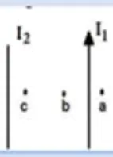
التعادل عند $a$ (خارج السلكين) يعني أن التيارين متعاكسان. عند عكس $I_2$ يصبحان بنفس الاتجاه فيتجاذبان وتصبح نقطة التعادل بين السلكين $(b)$.
272023 د1
في الشكل المجاور: إذا كانت شدة التيار الكهربائي المار في السلك $\mathrm{(2\,A)}$ وشدة المجال المغناطيسي المنتظم $\mathrm{(0.1\,T)}$، فما مقدار واتجاه القوة المغناطيسية المؤثرة في الجزء $(bc)$ من السلك بوحدة نيوتن؟
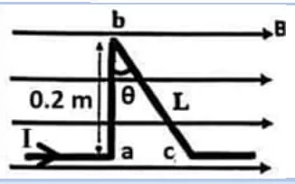
المركّبة العمودية على المجال من طول الجزء $bc$ تساوي $\mathrm{0.2\,m}$: $F=ILB\sin\theta=2(0.1)(0.2)=0.04\,\mathrm{N}$ باتجاه $(+Z)$
282023 د2
يتحرك أيون يحمل شحنة موجبة $(3.2\times10^{-19}\,\mathrm{C)}$ في منطقة مجالين متعامدين: المغناطيسي شدته $\mathrm{(0.1\,T)}$، والكهربائي وشدته $(5\times10^2\,\mathrm{V/m)}$، إذا كان تسارع هذا الأيون يساوي صفراً، فما مقدار سرعته بوحدة $\mathrm{(m/s)}$؟
تمّ مسارعة جسيمات مشحونة كتلتها $(m)$ ولها نفس الشحنة في مجال كهربائي منتظم بسرعات مختلفة، ثم أدخلت في مجال مغناطيسي شدته $(B)$ بشكل عمودي على خطوط المجال المغناطيسي. أي من الأشكال الآتية يمثل العلاقة بين نصف قطر المسار الدائري $(r)$ للجسيمات المشحونة وسرعته $(V)$؟
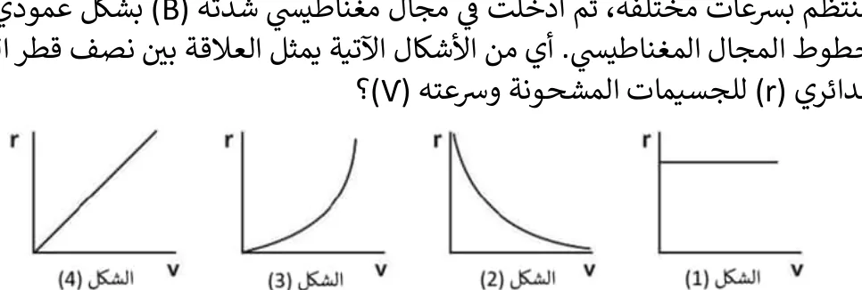
$r=\dfrac{m}{qB}v$ علاقة طردية خطية تمر بالأصل.
302024 د1
يبين الشكل المجاور سلكاً فلزياً طوله $\mathrm{(8\,cm)}$ ويحمل تياراً كهربائياً شدته $\mathrm{(3\,A)}$، جزء منه موضوع في مجال مغناطيسي منتظم شدته $\mathrm{(0.2\,T)}$ يتجه نحو محور الصادات السالب $(-Y)$، ما مقدار واتجاه القوة المغناطيسية المؤثرة في السلك؟
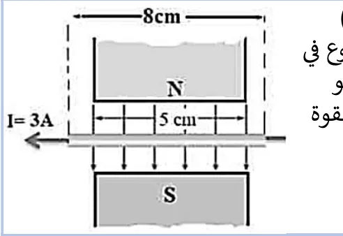
الجزء داخل المجال فقط $\mathrm{5\,cm}$: $F=ILB=3(0.05)(0.2)=0.03\,\mathrm{N}$، والاتجاه $(-\hat x)\times(-\hat y)=+\hat z$
312024 د1
أي الآتية تؤثر في الزخم الخطي لجسيم مشحون تم مسارعته في سيكلترون؟
عند الخروج من السيكلترون: $P=qBr$، فالزخم يعتمد على الشحنة وشدة المجال ونصف قطر السيكلترون، ولا يعتمد على الكتلة وحدها. (مفتاح الإجابة يعتبر كل الخيارات صحيحة عدا «الكتلة فقط».)
322024 د2
دخل جسيم مشحون كتلته $(2\times10^{-12}\,\mathrm{kg)}$ وشحنته $\mathrm{(4\,\mu C)}$ مجالاً مغناطيسياً منتظماً مقداره $\mathrm{(0.4\,T)}$ وبسرعة مقدارها $(2\times10^4\,\mathrm{m/s)}$ باتجاه عمودي على المجال المغناطيسي، ما مقدار سرعة الجسيم بعد مرور $\mathrm{(4\,s)}$ على وجوده داخل المجال المغناطيسي المنتظم بوحدة $\mathrm{(m/s)}$؟
القوة المغناطيسية لا تبذل شغلاً، فمقدار السرعة ثابت.
332024 د2
يستخدم جهاز منتقي السرعات كمرشح للسرعة، حيث يمكن باستخدامه التحكم في اختيار حزمة من الجسيمات المشحونة ذات سرعة محددة وتتحرك في خط مستقيم وذلك عندما تكون قوة لورنتز تساوي صفراً، في أي الحالات الآتية تصبح قوة لورنتز صفراً؟
$\vec F=q\vec E+q\vec v\times\vec B=0$
342024 استكمالية
إذا تحرك جسيم مشحون عمودياً على مجال مغناطيسي منتظم، فأي الآتية لا تعتبر صحيحة؟
القوة المغناطيسية عمودية على السرعة فلا تغير مقدارها.
352025 د1
تم مسارعة جسيمات مشحونة كتلة كل منها $(m)$ ولها نفس الشحنة في مجال كهربائي منتظم بسرعات متساوية ثم أدخلت في مناطق مجالات مغناطيسية مختلفة بشكل عمودي على خطوط المجال. أي من الأشكال الآتية يمثل العلاقة بين نصف قطر المدار الدائري للجسيمات وشدّة المجال المغناطيسي؟
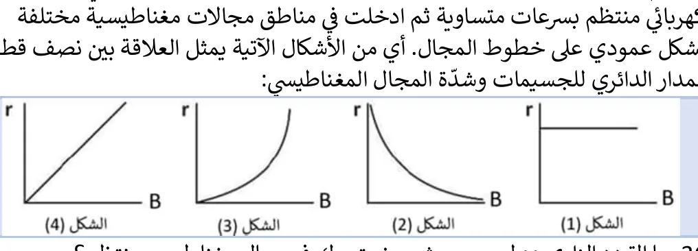
$r=\dfrac{mv}{qB}$ علاقة عكسية.
362025 د1
ما التردد الزاوي $\omega$ لجسيم مشحون يتحرك في مجال مغناطيسي منتظم؟
$\omega=\dfrac vr$ (ويساوي أيضاً $\dfrac{qB}{m}$)
372025 د2
متى تنحرف الجسيمات المشحونة عن المسار المستقيم باتجاه القوة المغناطيسية عند دخولها منتقي السرعات بسرعة مقدارها $(V)$؟
تتغلب القوة المغناطيسية عندما $qvB\gt qE$
382025 د2
يبين الشكل المجاور سلكاً يسري فيه تيار كهربائي شدته $\mathrm{(10\,A)}$ موضوع في مجال مغناطيسي منتظم شدته $\mathrm{(0.01\,T)}$، ما مقدار القوة المغناطيسية المؤثرة في السلك بوحدة نيوتن؟
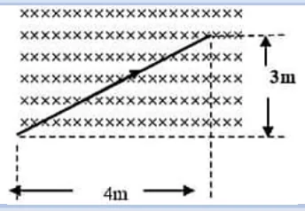
طول السلك داخل المجال $\sqrt{4^2+3^2}=5\,\mathrm{m}$ وهو عمودي على المجال (المجال داخل الصفحة): $F=10\times5\times0.01=0.5\,\mathrm{N}$
392025 د2
إذا كانت القوة المتبادلة بين سلكين لانهائيين متوازيين يحملان تياراً كهربائياً تساوي $\mathrm{(50\,N/m)}$، فكم تصبح القوة المتبادلة بينهما بوحدة $\mathrm{(N/m)}$ إذا قلت المسافة بينهما إلى النصف؟
$F\propto\dfrac1d$
السؤال الثاني (أ): ما المقصود بـ
12021 د1 علمي وصناعي
قوة لورنتز
أظهر الإجابة
محصلة القوتين الكهربائية والمغناطيسية المؤثرتين في جسيم مشحون يتحرك في منطقة فيها مجالان كهربائي ومغناطيسي معاً: $\vec F=q\vec E+q\vec v\times\vec B$
22020 د1 و2022 د2 صناعي
التسلا
أظهر الإجابة
شدة المجال المغناطيسي الذي يؤثر بقوة مقدارها $\mathrm{1\,N}$ في شحنة مقدارها $\mathrm{1\,C}$ تتحرك بسرعة $\mathrm{1\,m/s}$ عمودياً على اتجاه المجال: $T=\dfrac{N}{C\cdot m/s}=\dfrac{N}{A\cdot m}$
32018 د1
منتقي السرعات
أظهر الإجابة
جهاز يتكون من مجالين كهربائي ومغناطيسي منتظمين متعامدين، يسمح بمرور الجسيمات المشحونة التي سرعتها $v=\dfrac EB$ فقط دون انحراف.
42022 د1 علمي و2020 د3
شدة المجال المغناطيسي $0.5$ تسلا.
أظهر الإجابة
أن المجال يؤثر بقوة مقدارها $\mathrm{0.5\,N}$ في شحنة مقدارها $\mathrm{1\,C}$ تتحرك بسرعة $\mathrm{1\,m/s}$ عمودياً عليه (أو في سلك طوله $\mathrm{1\,m}$ يحمل تياراً $\mathrm{1\,A}$ عمودياً عليه).
السؤال الثاني (ب): علّل لما يلي
12022 د1 صناعي و2017 د2
لا تغير القوة المغناطيسية التي يؤثر فيها مجال مغناطيسي منتظم مقدار سرعة الشحنة المتحركة فيه.
أظهر الإجابة
لأن القوة المغناطيسية عمودية دائماً على اتجاه السرعة، فلا تبذل شغلاً على الشحنة ولا تغير طاقتها الحركية، وإنما تغير اتجاه السرعة فقط.
22022 د2 صناعي و2017 د3
لا تنحرف الجسيمات المشحونة عند دخولها جهاز منتقي السرعات عندما تكون سرعتها تساوي $\frac EB$.
أظهر الإجابة
لأن القوة الكهربائية $(qE)$ والقوة المغناطيسية $(qvB)$ تتساويان مقداراً وتتعاكسان اتجاهاً، فتكون محصلة القوى (قوة لورنتز) صفراً.
32022 د2 علمي
عند قذف إلكترون داخل ملف حلزوني يحمل تياراً كهربائياً باتجاه موازٍ لمحوره فإنه لا ينحرف.
أظهر الإجابة
لأن المجال داخل الملف موازٍ لمحوره، فتكون السرعة موازية للمجال $(\theta=0)$ ⇐ $F=qvB\sin0=0$
42020 د2
الشغل الذي تبذله القوة المغناطيسية على شحنة متحركة في مجال مغناطيسي تساوي صفر.
أظهر الإجابة
لأن القوة المغناطيسية عمودية على اتجاه الحركة (الإزاحة) دائماً $(W=Fd\cos90^\circ=0)$.
52023 استكمالية
لا يتأثر البروتون بقوة مغناطيسية لحظة مروره بسرعة معينة من نقطة تقع بين لفتين على سطح ملف حلزوني يسري به تيار كهربائي.
أظهر الإجابة
لأن المجالين الناتجين عن اللفتين عند تلك النقطة متساويان مقداراً ومتعاكسان اتجاهاً، فتكون شدة المجال المحصل عندها صفراً، فلا تؤثر قوة مغناطيسية.
62025 د1
دخل جسيم مشحون مجالاً مغناطيسياً منتظماً ولم يتأثر بقوة مغناطيسية.
أظهر الإجابة
لأنه دخل باتجاه موازٍ (أو معاكس) لخطوط المجال، فتكون الزاوية بين السرعة والمجال $0^\circ$ أو $180^\circ$ ⇐ $\sin\theta=0$
السؤال الثاني (ج، د): ماذا يحدث، فسّر، قارن
12022 د2 علمي وصناعي
ماذا يحدث للقوة المغناطيسية المتبادلة بين سلكين لا نهائيين متوازيين يحملان تياراً كهربائياً عند مضاعفة البعد بينهما؟
أظهر الإجابة
تقل إلى النصف، لأن $F=\dfrac{\mu_0I_1I_2L}{2\pi d}$
22023 د2
قُذف جسيم مشحون عمودياً على مجال مغناطيسي منتظم، فاتخذ مساراً دائرياً، أجب: (1) هل يبذل المجال المغناطيسي شغلاً على الجسيم المشحون؟ فسر إجابتك. (2) ماذا يحدث لنصف قطر المسار الدائري إذا أصبحت سرعة الجسيم مثلي ما كانت عليه؟ (3) ماذا يحدث لنصف قطر المسار الدائري إذا أصبحت شدة المجال المغناطيسي ثلث ما كانت عليه؟
أظهر الإجابة
(1) لا، لأن القوة المغناطيسية عمودية دائماً على اتجاه الحركة. (2) $r=\dfrac{mv}{qB}$ ⇐ يتضاعف نصف القطر. (3) يصبح نصف القطر ثلاثة أمثال ما كان عليه.
32022 د2 علمي
وضح الأثر الذي يحدثه المجال المغناطيسي على الجسيمات المشحونة داخل المسارع النووي (السيكلترون).
أظهر الإجابة
يجعلها تتحرك في مسارات دائرية (نصف دائرية داخل كل «D»)، فيغير اتجاه حركتها دون أن يغير مقدار سرعتها، فتعود إلى الفجوة بين النصفين لتتسارع من جديد بالمجال الكهربائي.
42022 د1 علمي
فسر: تردد حركة الجسيم المشحون يساوي تردد جهد المصدر الكهربائي في السيكلترون.
أظهر الإجابة
حتى يتغير اتجاه المجال الكهربائي في الفجوة كل نصف دورة، فيصل الجسيم إلى الفجوة كل مرة والمجال باتجاه يُسرّعه. وتردد الجسيم $f=\dfrac{qB}{2\pi m}$ لا يعتمد على سرعته فيبقى ثابتاً.
52023 د1
في ضوء دراستك لجهاز السيكلترون وجهاز منتقي السرعات، قارن بين: (1) اتجاه المجال الكهربائي بالنسبة لاتجاه سرعة الجسيم المشحون في كلا الجهازين (2) تزامن تأثير المجال الكهربائي والمغناطيسي على الجسيم المشحون في كلا الجهازين.
أظهر الإجابة
(1) السيكلترون: المجال الكهربائي (في الفجوة) موازٍ لاتجاه السرعة فيُسرّع الجسيم. منتقي السرعات: المجال الكهربائي عمودي على اتجاه السرعة. (2) السيكلترون: لا يؤثران معاً؛ الكهربائي في الفجوة فقط والمغناطيسي داخل الـ «D». منتقي السرعات: يؤثران في الجسيم في نفس الوقت.
62025 د2
قُذف جسيم مشحون كتلته $(m)$ بسرعة $(V)$ عمودياً على مجال مغناطيسي منتظم شدته $(B)$، فاتخذ مساراً دائرياً نصف قطره $(r)$ واكتسب زخماً زاوياً $(L)$، أجب: (1) فسر اتخاذ الجسيم مساراً دائرياً. (2) أثبت أن السرعة $(V)$ للجسيم تعطى بالعلاقة: $V=\sqrt{\dfrac{2\pi L}{mT}}$ (3) ماذا يحدث للزمن الدوري إذا أصبحت سرعة الجسيم مثلي ما كانت عليه، فسر إجابتك؟
أظهر الإجابة
(1) لأن القوة المغناطيسية ثابتة المقدار وعمودية دائماً على السرعة، فتعمل كقوة مركزية. (2) $L=mVr$ و $T=\dfrac{2\pi r}{V}$ ⇐ $r=\dfrac{VT}{2\pi}$ ⇐ $L=\dfrac{mV^2T}{2\pi}$ ⇐ $V=\sqrt{\dfrac{2\pi L}{mT}}$ (3) لا يتغير، لأن $T=\dfrac{2\pi m}{qB}$ لا يعتمد على السرعة (يتضاعف نصف القطر والمحيط بنفس النسبة).
السؤال الثالث: المسائل الحسابية
12022 د1 علمي وصناعي
يبين الشكل المجاور سلكين لا نهائيين المسافة بينهما $\mathrm{(6\,cm)}$، وملفاً دائرياً مكوناً من لفة واحدة ونصف قطره $(\pi\,\mathrm{cm)}$ ويمر به تيار شدته $\mathrm{(1A)}$ عكس عقارب الساعة، ويبعد مركزه عن السلك الثاني $\mathrm{(3\,cm)}$، بالاعتماد على القيم المثبتة على الشكل، أحسب: (1) القوة المغناطيسية المتبادلة بين السلكين والمؤثرة على وحدة الأطوال لكل منهما (2) مقدار واتجاه القوة المغناطيسية المؤثرة على جسيم شحنته $(+2\,\mu C)$ ويتحرك بسرعة $(4\times10^5\,\mathrm{m/s)}$ باتجاه محور السينات الموجب لحظة مروره بمركز الملف $(c)$
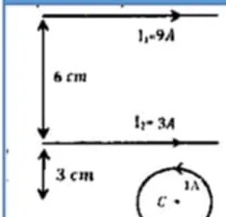
أظهر الإجابة
(1) $\dfrac FL=\dfrac{2\times10^{-7}\times9\times3}{0.06}=9\times10^{-5}\,\mathrm{N/m}$ (تجاذب؛ التياران بنفس الاتجاه) (2) عند $c$: $B_1=\dfrac{2\times10^{-7}\times9}{0.09}=2\times10^{-5}$ و $B_2=\dfrac{2\times10^{-7}\times3}{0.03}=2\times10^{-5}$ كلاهما داخل الصفحة، والحلقة: $\dfrac{4\pi\times10^{-7}}{2\pi\times10^{-2}}=2\times10^{-5}$ خارج الصفحة $B=2\times10^{-5}\,\mathrm{T}$ داخل الصفحة ⇐ $F=qvB=2\times10^{-6}\times4\times10^5\times2\times10^{-5}=1.6\times10^{-5}\,\mathrm{N}$ باتجاه $(+Y)$
22022 د2 صناعي
يتسارع بروتون من السكون خلال فرق جهد مقداره $\mathrm{(1000\,V)}$، ثم يدخل مجالاً مغناطيسياً شدته $\mathrm{(0.04\,T)}$ بشكل عمودي على خطوط المجال المغناطيسي. إذا علمت أن كتلة البروتون $(1.67\times10^{-27}\,\mathrm{kg)}$ وشحنته $(1.6\times10^{-19}\,\mathrm{C)}$ أوجد: (1) نصف قطر مسار البروتون (2) الزمن الدوري له (3) التردد الزاوي لحركة البروتون.
سلكان لا نهائيان بينهما ملف دائري مكون من لفتين يكاد يلامس كلا السلكين وفي نفس المستوى، مر بروتون من مركز الملف الدائري بسرعة $(6\pi\times10^4\,\mathrm{m/s)}$ فتأثر بقوة مغناطيسية مقدارها $(57.6\times10^{-20}\,\mathrm{N)}$، بالاعتماد على القيم المثبتة على الشكل احسب: (1) القوة المغناطيسية المتبادلة بين السلكين والمؤثرة في وحدة الطول لكل منهما (2) مقدار واتجاه التيار المار في الملف الدائري.
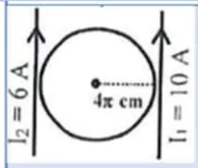
أظهر الإجابة
نصف قطر الملف $4\pi\,\mathrm{cm}$ فالمسافة بين السلكين $8\pi\,\mathrm{cm}\approx0.251\,\mathrm{m}$ (1) $\dfrac FL=\dfrac{2\times10^{-7}\times6\times10}{0.251}\approx4.77\times10^{-5}\,\mathrm{N/m}$ (2) $B=\dfrac{F}{qv}=\dfrac{57.6\times10^{-20}}{1.6\times10^{-19}\times6\pi\times10^4}\approx1.9\times10^{-5}\,\mathrm{T}$ محصلة السلكين في المركز: $(1.59-0.95)\times10^{-5}\approx0.64\times10^{-5}\,\mathrm{T}$ خارج الصفحة مجال الملف المطلوب $\approx1.27\times10^{-5}$ خارج الصفحة: $\dfrac{\mu_0(2)I}{2(0.126)}=1.27\times10^{-5}$ ⇐ $I\approx1.2\,\mathrm{A}$ عكس عقارب الساعة
42021 د1 علمي
سلك طويل $cd$ كتلته $\mathrm{6\,g}$ وطوله $\mathrm{1.5\,m}$ موازٍ لسلك $ab$ ويقع السلكان في مستوى رأسي واحد فإذا كان السلك $cd$ قابل للانزلاق لأعلى ولأسفل على حاملين رأسيين ومر تيار شدته $120$ أمبير في الدارة، بين على أي ارتفاع فوق $ab$ يتزن السلك $cd$؟
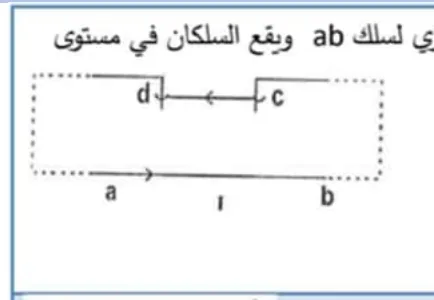
أظهر الإجابة
التياران في السلكين متعاكسان (نفس الدارة) فيتنافران، ويتزن $cd$ عندما تساوي قوة التنافر وزنه: $\dfrac{\mu_0I^2L}{2\pi d}=mg$ ⇐ $d=\dfrac{2\times10^{-7}\times(120)^2\times1.5}{0.006\times10}=0.072\,\mathrm{m}=7.2\,\mathrm{cm}$
52021 د1 علمي وصناعي
ملف حلزوني طوله $(20\pi\,\mathrm{cm)}$ وعدد لفاته $100$ لفة مغمور في مجال مغناطيسي منتظم شدته $(4\times10^{-5}\,\mathrm{T)}$ وباتجاه الشرق، مر إلكترون كتلته $(9.1\times10^{-31}\,\mathrm{kg)}$ من النقطة $(a)$ فانحرف في مسار دائري تردده الزاوي يساوي $(5.1\times10^7\,\mathrm{rad/s)}$. باعتماد الشكل، أجب عما يلي: (1) لماذا تكون شدة المجال خارج الملف الحلزوني الذي طوله أكبر بكثير من قطره صغيرة جداً؟ (2) احسب شدة التيار الكهربائي المار في الملف الحلزوني.
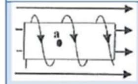
أظهر الإجابة
(1) لأن محصلة المجالات الناشئة عن التيارات في الجزأين العلوي والسفلي للملف تكاد تلغي بعضها خارج الملف، ولأن خطوط المجال خارجه تنتشر في حيز كبير. (2) $B=\dfrac{\omega m}{e}=\dfrac{5.1\times10^7\times9.1\times10^{-31}}{1.6\times10^{-19}}\approx2.9\times10^{-4}\,\mathrm{T}$ مجال الملف $=2.9\times10^{-4}-0.4\times10^{-4}=2.5\times10^{-4}\,\mathrm{T}$ (بنفس اتجاه المجال الخارجي حسب الشكل) $I=\dfrac{BL}{\mu_0N}=\dfrac{2.5\times10^{-4}\times0.2\pi}{4\pi\times10^{-7}\times100}=1.25\,\mathrm{A}$
62021 د1 صناعي
سلك مستقيم طويل جداً يمر به تيار شدته $\mathrm{4A}$ مغمور في مجال مغناطيسي منتظم شدته $(5\times10^{-5}\,\mathrm{T)}$ باتجاه الناظر، كما في الشكل المجاور احسب: (1) القوة المغناطيسية المؤثرة في جزء من السلك طوله $\mathrm{(1\,m)}$ (2) شدة المجال المغناطيسي الكلي في النقطة $(a)$ (3) القوة المغناطيسية المؤثرة في إلكترون يمر بالنقطة $(a)$ بسرعة $(6\times10^5\,\mathrm{m/s)}$ باتجاه الشرق.
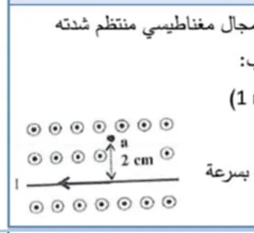
أظهر الإجابة
(1) $F=ILB=4\times1\times5\times10^{-5}=2\times10^{-4}\,\mathrm{N}\ (+Y)$ (2) مجال السلك عند $a$: $\dfrac{2\times10^{-7}\times4}{0.02}=4\times10^{-5}\,\mathrm{T}$ داخل الصفحة ⇐ $B_a=5-4=1\times10^{-5}\,\mathrm{T}\ (+z)$ (3) $F=evB=1.6\times10^{-19}\times6\times10^5\times10^{-5}=9.6\times10^{-19}\,\mathrm{N}\ (+Y)$ (مفتاح الإجابة يذكر $3.2\times10^{-19}\,\mathrm{N}$، والتعويض المباشر يعطي $9.6\times10^{-19}\,\mathrm{N}$.)
72021 د2 علمي وصناعي
يبين الشكل المجاور سلكاً يسري فيه تيار كهربائي شدته $\mathrm{(2A)}$ في الاتجاه المبين، أجب عن الآتية: (1) ما شدة المجال المغناطيسي عند النقطة $(C)$؟ (2) حدد اتجاه المجال الكهربائي الواجب أن يؤثر عند النقطة $c$ بحيث تنعدم قوة لورنتز المؤثرة على البروتونات المارة باتجاه $(+y)$.
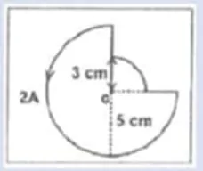
أظهر الإجابة
(1) $\frac34$ دائرة $\mathrm{(5\,cm)}$ + $\frac14$ دائرة $\mathrm{(3\,cm)}$: $B\approx1.88\times10^{-5}+1.05\times10^{-5}=2.93\times10^{-5}\,\mathrm{T}\ (+z)$ (2) القوة المغناطيسية على البروتون: $\hat y\times\hat z=+\hat x$، فيجب أن تكون القوة الكهربائية نحو $(-x)$ ⇐ المجال الكهربائي باتجاه $(-X)$
82022 د1 صناعي و2021 د2 علمي
جسمان $(X,Y)$، حيث $(m_x=2m_y)$، قذفا أحدهما تلو الآخر، بنفس السرعة من النقطة $(a)$ نحو أعلى الصفحة في مجال مغناطيسي منتظم مقترب من الناظر، كما في الشكل المجاور، يحمل الجسيم $(X)$ شحنة $\mathrm{(-2\,\mu C)}$ بينما الجسيم $(Y)$ يحمل شحنة $\mathrm{(1\,\mu C)}$، إذا علمت أن نصف القطر الذي دار به الجسم $(X)$ قبل أن يصطدم بالحاجز يساوي $\mathrm{(10\,cm)}$ أوجد المسافة بين نقطتي اصطدام كلاً من الجسيمين الحاجز.
أظهر الإجابة
$r=\dfrac{mv}{qB}$ ⇐ $\dfrac{r_y}{r_x}=\dfrac{m_y}{m_x}\cdot\dfrac{q_x}{q_y}=\dfrac12\times2=1$ ⇐ $r_y=10\,\mathrm{cm}$ الشحنتان مختلفتان فينحرفان إلى جهتين متعاكستين، وكل منهما يصطدم بالحاجز بعد نصف دورة على بعد قطر $\mathrm{(20\,cm)}$ من $a$ المسافة بين نقطتي الاصطدام $=20+20=40\,\mathrm{cm}$
92021 د2 علمي
يمثل الشكل المجاور سلكين مستقيمين طويلين لانهائيين في الطول يحمل كل منهما تياراً كهربائياً، إذا مرت شحنة موجبة مقدارها $5$ ميكروكولوم بالنقطة $(a)$ بسرعة مقدارها $(2\times10^3\,\mathrm{m/s)}$ باتجاه المحور الصادي الموجب، فإنها تتأثر بقوة مقدارها $(1\times10^{-6}\,\mathrm{N)}$ باتجاه محور السينات الموجب، جد مقدار واتجاه التيار في السلك الثاني.
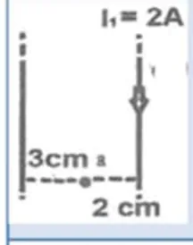
أظهر الإجابة
$B_a=\dfrac{F}{qv}=\dfrac{10^{-6}}{5\times10^{-6}\times2\times10^3}=10^{-4}\,\mathrm{T}$، واتجاهه من $\vec F=q\vec v\times\vec B$ ⇐ $\hat y\times\vec B=+\hat x$ ⇐ $\vec B$ باتجاه $(-z)$ بطرح مجال السلك الأول ثم $I_2=\dfrac{2\pi dB_2}{\mu_0}$ ⇐ $I_2=4.5\,\mathrm{A}$ باتجاه $(-Y)$
102017 د2
سلكان مستقيمان لا نهائيان وعموديان على الصفحة ويحملان تيارين كما في الشكل، النقطة $(c)$ تقع في مستوى الصفحة. اعتماداً على الشكل احسب ما يأتي: (1) القوة المغناطيسية التي يؤثر بها السلك الأول على $\mathrm{(0.25\,m)}$ من طول السلك الثاني (2) مقدار واتجاه المجال المغناطيسي عند النقطة $c$.
$(x,y)$ سلكان مستقيمان لا نهائيان ومتوازيان مغموران في مجال مغناطيسي منتظم مقداره $(2\times10^{-5}\,\mathrm{T)}$، يسري في كل منهما تيار كهربائي كما في الشكل المجاور، إذا علمت أن المجال المغناطيسي عند النقطة $(a)$ والناتج عن السلك $(x)$ يساوي $(2\times10^{-5}\,\mathrm{T)}$، معتمداً على الشكل وبياناته احسب كل مما يأتي: (1) التيار الكهربائي المار في السلك $(x)$ (2) المجال المغناطيسي الكلي عند النقطة $(a)$ (3) مقدار القوة المغناطيسية المؤثرة على وحدة الأطوال من السلك $(y)$.
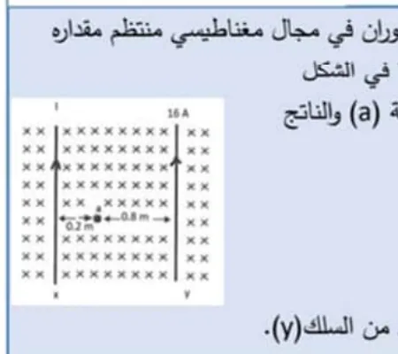
أظهر الإجابة
(1) $I_x=\dfrac{2\pi(0.2)(2\times10^{-5})}{4\pi\times10^{-7}}=20\,\mathrm{A}$ (2) مجال $y$ $(16\,\mathrm{A},\ 0.8\,\mathrm{m)}$: $4\times10^{-6}$؛ مع مجال $x$ والمجال الخارجي (كلها داخل الصفحة): $B_a=3.6\times10^{-5}\,\mathrm{T}\ (-z)$ (3) على $y$: المجال الخارجي + مجال $x$ عند $y$ $\mathrm{(1\,m)}$: $2\times10^{-5}+0.4\times10^{-5}=2.4\times10^{-5}$ ⇐ $\dfrac FL=16\times2.4\times10^{-5}=3.84\times10^{-4}\,\mathrm{N/m}$
122018 د1
ملف حلزوني طوله $(20\pi\,\mathrm{cm)}$ وعدد لفاته $100$ لفة يحمل تياراً شدته $2$ أمبير، احسب: (1) شدة المجال المغناطيسي على محور الملف (2) إذا وضع سلك مستقيم طوله $\mathrm{(10\,cm)}$ داخل الملف ومنطبقاً على محوره ويمر به تيار شدته $\mathrm{(4\,A)}$ احسب القوة المغناطيسية التي يتأثر بها السلك من مجال الملف.
في الشكل المجاور، تمثل النقطتان $(a,b)$ مقطعي موصلين مستقيمين طويلين جداً متعامدين مع مستوى الورقة، يمر في الأول تيار كهربائي شدته $\mathrm{(10\,A)}$ باتجاه $(+Z)$، ويمر في الثاني تيار كهربائي شدته $\mathrm{(15\,A)}$ وباتجاه $(+Z)$ أيضاً. النقطة $(C)$ تقع في مستوى الورقة وتبعد $\mathrm{(30\,cm)}$ عن النقطة $(a)$، و $\mathrm{(40\,cm)}$ عن النقطة $(b)$. احسب: (1) شدة المجال المغناطيسي الكلي عند النقطة $(C)$ (2) مقدار القوة التي يؤثر فيها أحد الموصلين على وحدة الأطوال من الآخر.
سلك مستقيم طويل جداً يمر فيه تيار كهربائي شدته $\mathrm{(2A)}$، مغمور في مجال مغناطيسي منتظم شدته $(4\times10^{-5}\,\mathrm{T)}$ بعيداً عن الناظر كما في الشكل المجاور، احسب: (1) شدة المجال المغناطيسي الكلي في النقطة $(a)$ والتي تبعد عن السلك $\mathrm{(2\,cm)}$ (2) القوة المغناطيسية المؤثرة في بروتون يتحرك بسرعة $(2\times10^5\,\mathrm{m/s)}$ لحظة مروره بالنقطة $(a)$ بالاتجاه السيني السالب.
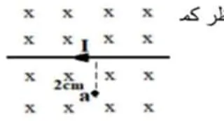
أظهر الإجابة
(1) مجال السلك عند $a$: $\dfrac{2\times10^{-7}\times2}{0.02}=2\times10^{-5}\,\mathrm{T}$ نحو الناظر ⇐ $B_a=4-2=2\times10^{-5}\,\mathrm{T}\ (-z)$ (2) $F=qvB=1.6\times10^{-19}\times2\times10^5\times2\times10^{-5}=6.4\times10^{-19}\,\mathrm{N}\ (-Y)$
152019 د3
ثلاثة أسلاك مستقيمة طويلة جداً يسري في كل منها تيار كهربائي كما في الشكل المجاور، احسب مقدار واتجاه القوة المغناطيسية المؤثرة في وحدة الطول من السلك $(b)$
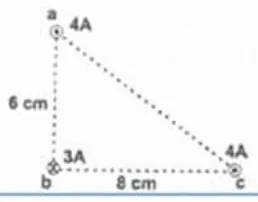
أظهر الإجابة
من $a$ $(4A,\ 6\,\mathrm{cm)}$: $\dfrac FL=\dfrac{2\times10^{-7}\times4\times3}{0.06}=4\times10^{-5}$ من $c$ $(4A,\ 8\,\mathrm{cm)}$: $\dfrac{2\times10^{-7}\times4\times3}{0.08}=3\times10^{-5}$، والقوتان متعامدتان $\dfrac FL=5\times10^{-5}\,\mathrm{N/m}$ بزاوية $\theta=53^\circ$
162020 د2
يمثل الشكل المجاور ثلاثة أسلاك مستقيمة طويلة جداً يسري في كل منها تيار كهربائي. إذا علمت أن اتجاه محصلة القوى المؤثرة على السلك $(b)$ تصنع زاوية $(45^\circ)$ مع محور السينات السالب، احسب مقدار واتجاه التيار الكهربائي في السلك $(C)$.
أظهر الإجابة
القوة من $a$ على $b$: $\dfrac{2\times10^{-7}\times3\times3}{0.06}=3\times10^{-5}\,\mathrm{N/m}$ الزاوية $45^\circ$ ⇐ القوة من $c$ تساويها: $\dfrac{2\times10^{-7}\times I_c\times3}{0.08}=3\times10^{-5}$ ⇐ $I_c=4\,\mathrm{A}$ باتجاه $(+Z)$
172023 د1 و2024 استكمالية
يمثل الشكل المجاور ثلاثة أسلاك مستقيمة طويلة جداً يسري في كل منها تيار كهربائي. احسب مقدار واتجاه القوة المغناطيسية المؤثرة في وحدة الطول من السلك $(b)$.
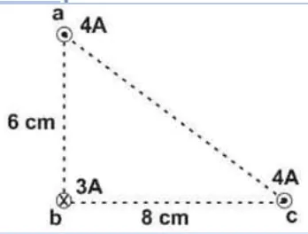
أظهر الإجابة
كما في السؤال 15: $4\times10^{-5}$ و $3\times10^{-5}$ متعامدتان ⇐ $F_{net}=5\times10^{-5}\,\mathrm{N/m}$، $\theta=53^\circ$ أسفل محور السينات السالب
182023 د1
جسيم مشحون بشحنة مقدارها $(3.2\times10^{-19}\,\mathrm{C)}$، وكتلته $(4\times10^{-28}\,\mathrm{kg)}$، يدور بسرعة ثابتة مقدارها $(1\times10^7\,\mathrm{m/s)}$ في مسار دائري متعامد مع مجال مغناطيسي منتظم شدته $\mathrm{(0.1\,T)}$، احسب: (1) نصف قطر المسار الدائري للجسيم (2) الزمن الدوري لحركة الجسيم (3) الطاقة الحركية للجسيم بعد أن يتم $(100)$ دورة داخل المجال المغناطيسي.
أظهر الإجابة
(1) $r=\dfrac{mv}{qB}=\dfrac{4\times10^{-28}\times10^7}{3.2\times10^{-19}\times0.1}=0.125\,\mathrm{m}$ (2) $T=\dfrac{2\pi r}{v}=\dfrac{2\pi\times0.125}{10^7}\approx7.85\times10^{-8}\,\mathrm{s}$ (في المفتاح «78.5 s» وهو خطأ في الأس) (3) لا تتغير لأن المجال لا يبذل شغلاً: $K=\frac12mv^2=2\times10^{-14}\,\mathrm{J}$
192023 د1
ملف دائري موضوع في مستوى أفقي نصف قطره $(\pi\,\mathrm{cm)}$ وعدد لفاته $(10$ لفات$)$ يسري فيه تيار كهربائي شدته $\mathrm{(0.1\,A)}$ عكس اتجاه عقارب الساعة، يؤثر عليه مجال مغناطيسي خارجي شدته $(3\times10^{-5}\,\mathrm{T)}$ نحو $(+X)$، احسب: (1) محصلة المجال المغناطيسي في مركز الملف الدائري (2) القوة المغناطيسية المؤثرة على بروتون لحظة مروره من مركز الملف الدائري بسرعة $(2\times10^5\,\mathrm{m/s)}$ نحو $(+X)$.
أظهر الإجابة
(1) مجال الملف: $\dfrac{4\pi\times10^{-7}\times10\times0.1}{2\pi\times10^{-2}}=2\times10^{-5}\,\mathrm{T}$ (رأسي لأعلى)، عمودي على $3\times10^{-5}$ $B=\sqrt{13}\times10^{-5}\,\mathrm{T}$، $\theta=33.7^\circ$ فوق محور السينات الموجب (2) المركبة الموازية للسرعة لا تؤثر: $F=1.6\times10^{-19}\times2\times10^5\times2\times10^{-5}=6.4\times10^{-19}\,\mathrm{N}\ (-Y)$
202023 د1
يبين الشكل المجاور، سلكين مستقيمين لانهائيين طويلين جداً ومتوازيين والمسافة بينهما $\mathrm{(2\,m)}$، يمرّ في كل منهما تيار كهربائي وفي نفس الاتجاه، فإذا انعدمت شدة المجال المغناطيسي عند نقطة في منتصف المسافة بينهما، وكانت القوة المؤثرة على وحدة الأطوال من أي من السلكين $(4\times10^{-5}\,\mathrm{N/m)}$. احسب: (1) شدة التيار المار في كل من السلكين (2) القوة المغناطيسية المؤثرة على بروتون يتحرك بسرعة $(4\times10^6\,\mathrm{m/s)}$ باتجاه $(+Y)$ في نفس مستوى السلكين، عند مروره بالنقطة $(b)$ التي تبعد عن السلك الأول مسافة $\mathrm{(2\,m)}$.
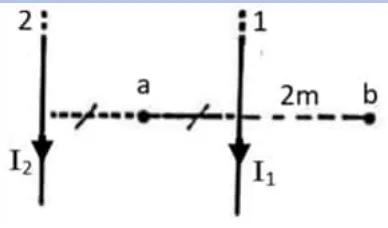
أظهر الإجابة
(1) انعدام المجال في المنتصف ⇐ $I_1=I_2=I$؛ $\dfrac{2\times10^{-7}I^2}{2}=4\times10^{-5}$ ⇐ $I=20\,\mathrm{A}$ (2) عند $b$: $B=\dfrac{2\times10^{-7}\times20}{2}+\dfrac{2\times10^{-7}\times20}{4}=3\times10^{-6}\,\mathrm{T}$ ⇐ $F=1.6\times10^{-19}\times4\times10^6\times3\times10^{-6}\approx1.92\times10^{-18}\,\mathrm{N}\ (+X)$ (مفتاح الإجابة يذكر $28.8\times10^{-19}\,\mathrm{N}$.)
212023 د2
الشكل المجاور يمثل ملفاً حلزونياً عدد لفاته $(7)$ لفات وطوله $\mathrm{(3\,cm)}$، يمر فيه تيار كهربائي شدته $\mathrm{(2\,A)}$، غُمر في مجال مغناطيسي منتظم شدته $(6\times10^{-4}\,\mathrm{T)}$ نحو اليسار، جد: (1) محصلة شدة المجال المغناطيسي عند النقطة $(a)$ داخل الملف الحلزوني (2) القوة المغناطيسية في بروتون يتحرك بسرعة مقدارها $(5\times10^5\,\mathrm{m/s)}$ لحظة مروره بالنقطة $(a)$ التي تقع على محور الملف الحلزوني وباتجاه موازٍ لمحور الملف الحلزوني نحو $(-X)$.
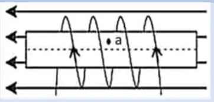
أظهر الإجابة
(1) $B_s=\dfrac{4\pi\times10^{-7}\times7\times2}{0.03}\approx5.86\times10^{-4}\,\mathrm{T}$ نحو اليسار ⇐ $B_{net}\approx1.19\times10^{-3}\,\mathrm{T}\ (-X)$ (2) السرعة موازية للمجال ⇐ $F=qvB\sin0=0$
222023 د2
سلك مستقيم من النحاس كثافة كتلته الطولية $\mathrm{(46.6\,g/m)}$ موضوع أفقياً في مجال مغناطيسي، ويسري فيه تيار كهربائي شدته $\mathrm{(5\,A)}$ نحو محور السينات السالب، ما مقدار واتجاه أقل مجال مغناطيسي يلزم لرفع هذا السلك رأسياً إلى أعلى؟
سلك مستقيم طويل جداً يمر فيه تيار كهربائي شدته $\mathrm{(4\,A)}$ مغمور في مجال مغناطيسي منتظم شدته $(5\times10^{-5}\,\mathrm{T)}$ باتجاه الناظر كما في الشكل المجاور، احسب: (1) القوة المغناطيسية المؤثرة في جزء من السلك طوله $\mathrm{(1\,m)}$ مقداراً واتجاهاً (2) شدة المجال المغناطيسي الكلي في النقطة $(a)$ التي تقع فوق السلك على بعد $\mathrm{(2\,cm)}$ (3) القوة المغناطيسية المؤثرة في إلكترون يتحرك بسرعة $(2\times10^5\,\mathrm{m/s)}$ لحظة مروره بالنقطة $(a)$ بالاتجاه السيني الموجب.
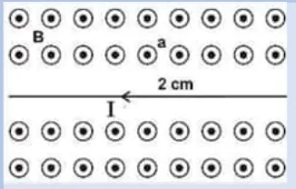
أظهر الإجابة
(1) $F=4\times1\times5\times10^{-5}=2\times10^{-4}\,\mathrm{N}\ (+Y)$ (2) مجال السلك $4\times10^{-5}$ بعيداً عن الناظر ⇐ $B_{net}=1\times10^{-5}\,\mathrm{T}\ (+Z)$ (3) $F=1.6\times10^{-19}\times2\times10^5\times10^{-5}=3.2\times10^{-19}\,\mathrm{N}\ (+Y)$
242023 استكمالية
يتحرك جسيم شحنته $\mathrm{(8.4\,\mu C)}$ بسرعة مقدارها $\mathrm{100\,m/s}$، في مجال مغناطيسي منتظم شدته $\mathrm{0.3\,T}$ باتجاه محور السينات الموجب. احسب مقدار القوة المغناطيسية المؤثرة في الشحنة واتجاهها في الحالتين $(a,b)$ المبينتين في الشكل المجاور.
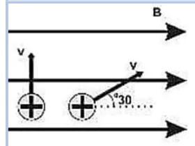
أظهر الإجابة
(a) الزاوية $30^\circ$: $F=8.4\times10^{-6}\times100\times0.3\times\sin30=1.26\times10^{-4}\,\mathrm{N}\ (-Z)$ (b) السرعة عمودية: $F=2.52\times10^{-4}\,\mathrm{N}\ (-Z)$
252023 استكمالية
سلكان طويلان لانهائيان، الأول يسري به تيار كهربائي شدته $\mathrm{(18\,A)}$ باتجاه $(+X)$ والسلك الثاني موازياً للسلك الأول ويقع أسفله على بُعد $\mathrm{(30\,cm)}$ ويسري به تيار كهربائي شدته $\mathrm{(12\,A)}$ باتجاه $(+X)$، احسب: (1) بعد نقطة التعادل عن السلك الأول (2) القوة المؤثرة على بروتون يتحرك بسرعة $(2\times10^5\,\mathrm{m/s)}$ باتجاه $(+X)$ لحظة مروره من النقطة $(a)$ التي تقع فوق السلك الأول على بعد $\mathrm{(10\,cm)}$.
أظهر الإجابة
(1) التياران بنفس الاتجاه فالتعادل بينهما: $\dfrac{18}{x}=\dfrac{12}{0.3-x}$ ⇐ $x=0.18\,\mathrm{m}=18\,\mathrm{cm}$ من السلك الأول (2) عند $a$: $B=\dfrac{2\times10^{-7}\times18}{0.1}+\dfrac{2\times10^{-7}\times12}{0.4}=4.2\times10^{-5}\,\mathrm{T}$ (خارج الصفحة) $F=1.6\times10^{-19}\times2\times10^5\times4.2\times10^{-5}=1.344\times10^{-18}\,\mathrm{N}\ (-Y)$
262024 د1
يبين الشكل المجاور ملفاً حلزونياً عدد لفاته $(160$ لفة/م$)$ ويحمل تياراً كهربائياً شدته $\left(\frac{0.2}{\pi}\,\mathrm{A}\right)$، إذا وضع بالقرب منه وعلى بعد $\mathrm{(0.2\,m)}$ سلك مستقيم لانهائي الطول ويسري فيه تيار كهربائي شدته $(I)$، احسب مقدار واتجاه شدة التيار $(I)$ الذي يمر في السلك بحيث تكون محصلة القوى المغناطيسية المؤثرة في شحنة كهربائية مقدارها $\mathrm{(2\,\mu C)}$ لحظة مرورها بالنقطة $(a)$ وبسرعة مقدارها $(2\times10^6\,\mathrm{m/s)}$ نحو الشرق تساوي $(4\times10^{-6}\,\mathrm{N)}$ وباتجاه $(+Z)$
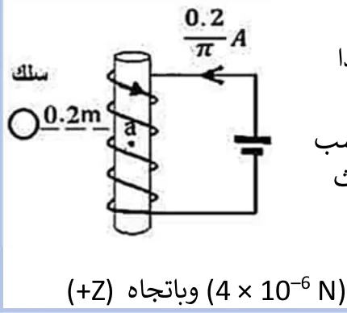
أظهر الإجابة
مجال الملف عند $a$ (على محوره): $B_s=4\pi\times10^{-7}\times160\times\dfrac{0.2}{\pi}=1.28\times10^{-5}\,\mathrm{T}$ المجال المحصل المطلوب: $B=\dfrac{F}{qv}=\dfrac{4\times10^{-6}}{2\times10^{-6}\times2\times10^6}=10^{-6}\,\mathrm{T}$ بالاتجاه الذي يعطي القوة $(+Z)$ فيكون مجال السلك عند $a$ = الفرق المطلوب ⇐ $I\approx11.8\,\mathrm{A}$ باتجاه $(-Z)$
272024 د1
لوحان فلزيان متوازيان مشحونان بشحنتين مختلفتين، جهد الصفيحة الموجبة $\mathrm{(7.4\,V)}$ [الأصح $\mathrm{7.5\,V}$]، وجهد الصفيحة السالبة $\mathrm{(-7.5\,V)}$، والبعد بينهما $\mathrm{(10\,cm)}$، ومغمورتان في مجال مغناطيسي منتظم شدته $\mathrm{(0.5\,T)}$، دخل بينهما جسيم شحنته $\mathrm{(4\,\mu C)}$ وبسرعة مقدارها $\mathrm{(300\,m/s)}$ كما في الشكل المجاور، (بإهمال وزن الجسيم): (1) احسب القوة المؤثرة في الجسيم المشحون (2) صف حركة الجسيم (3) ماذا سيحدث لحركة الجسيم لو قلت سرعته عن $\mathrm{(300\,m/s)}$.
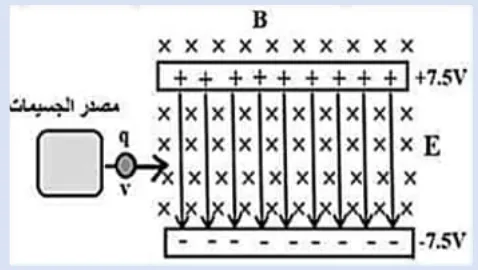
أظهر الإجابة
$E=\dfrac{15}{0.1}=150\,\mathrm{V/m}$؛ $F_E=qE=6\times10^{-4}\,\mathrm{N}$ للأسفل و $F_B=qvB=6\times10^{-4}\,\mathrm{N}$ للأعلى (1) $\Sigma F=0$ (2) يتحرك في خط مستقيم نحو اليمين بسرعة ثابتة دون أن ينحرف. (3) تقل $F_B$ فتتغلب $F_E$ فينحرف نحو الأسفل (باتجاه القوة الكهربائية).
282024 د2
ملف حلزوني مغمور في مجال مغناطيسي منتظم شدته $(3\times10^{-3}\,\mathrm{T)}$ وباتجاه $(+Y)$، فإذا كانت عدد لفاته $(5000$ لفة/م$)$ ويحمل تياراً كما في الشكل المجاور، ما مقدار القوة المغناطيسية المؤثرة في شحنة كهربائية مقدارها $\mathrm{(2\,\mu C)}$ لحظة مرورها بالنقطة $(a)$ بسرعة مقدارها $(2\times10^6\,\mathrm{m/s)}$ نحو $(+X)$ مقداراً واتجاهاً؟
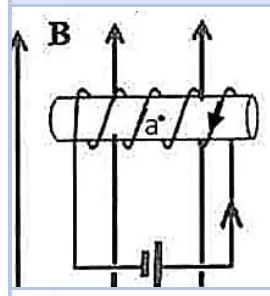
أظهر الإجابة
مجال الملف على محوره موازٍ للسرعة $(\pm X)$ فلا يؤثر في الشحنة، ويؤثر المجال الخارجي فقط: $F=qvB=2\times10^{-6}\times2\times10^6\times3\times10^{-3}=0.012\,\mathrm{N}$، والاتجاه $\hat x\times\hat y=+\hat z$ ⇐ $(+Z)$
292024 د2
سلك مستقيم موصل طويل جداً، يحمل تياراً كهربائياً شدته $\mathrm{(2\,A)}$، موضوع أفقياً داخل مجال مغناطيسي منتظم شدته $(4\times10^{-6}\,\mathrm{T)}$ كما في الشكل المجاور، جد ما يأتي: (1) محصلة المجال المغناطيسي عند النقطة $(a)$ والتي تبعد $\mathrm{(0.2\,m)}$ عن السلك (2) كثافة الكتلة الطولية للسلك عندما يكون متزناً.
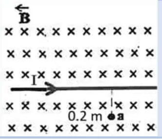
أظهر الإجابة
(1) مجال السلك تحته: $\dfrac{2\times10^{-7}\times2}{0.2}=2\times10^{-6}\,\mathrm{T}$ داخل الصفحة ⇐ $B_{net}=6\times10^{-6}\,\mathrm{T}\ (-Z)$ (2) $ILB=mg$ ⇐ $\dfrac mL=\dfrac{IB}{g}=\dfrac{2\times4\times10^{-6}}{10}=0.8\times10^{-6}\,\mathrm{kg/m}$
302025 د1
الشكل المجاور يبين مجالاً مغناطيسياً منتظماً شدته $1.5$ تسلا دخل إليه بروتون عند $a$ في اتجاه يتعامد مع المجال بسرعة تساوي $(2\times10^7\,\mathrm{m/s)}$، علماً بأن شحنة البروتون $(1.6\times10^{-19}\,\mathrm{C)}$، وكتلته $(1.67\times10^{-27}\,\mathrm{kg)}$ احسب: (1) القوة المغناطيسية المؤثرة في البروتون (2) الزمن الدوري (3) احسب تسارع البروتون وهو في المجال.
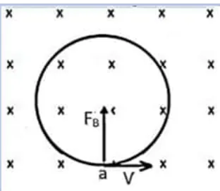
أظهر الإجابة
(1) $F=qvB=1.6\times10^{-19}\times2\times10^7\times1.5=4.8\times10^{-12}\,\mathrm{N}$ نحو المركز (2) $T=\dfrac{2\pi m}{qB}=\dfrac{2\pi\times1.67\times10^{-27}}{1.6\times10^{-19}\times1.5}\approx4.37\times10^{-8}\,\mathrm{s}$ (في المفتاح $4.87\times10^{-8}$) (3) تسارع مركزي فقط (لا تسارع مماسي): $a_c=\dfrac Fm=\dfrac{4.8\times10^{-12}}{1.67\times10^{-27}}\approx2.87\times10^{15}\,\mathrm{m/s^2}$